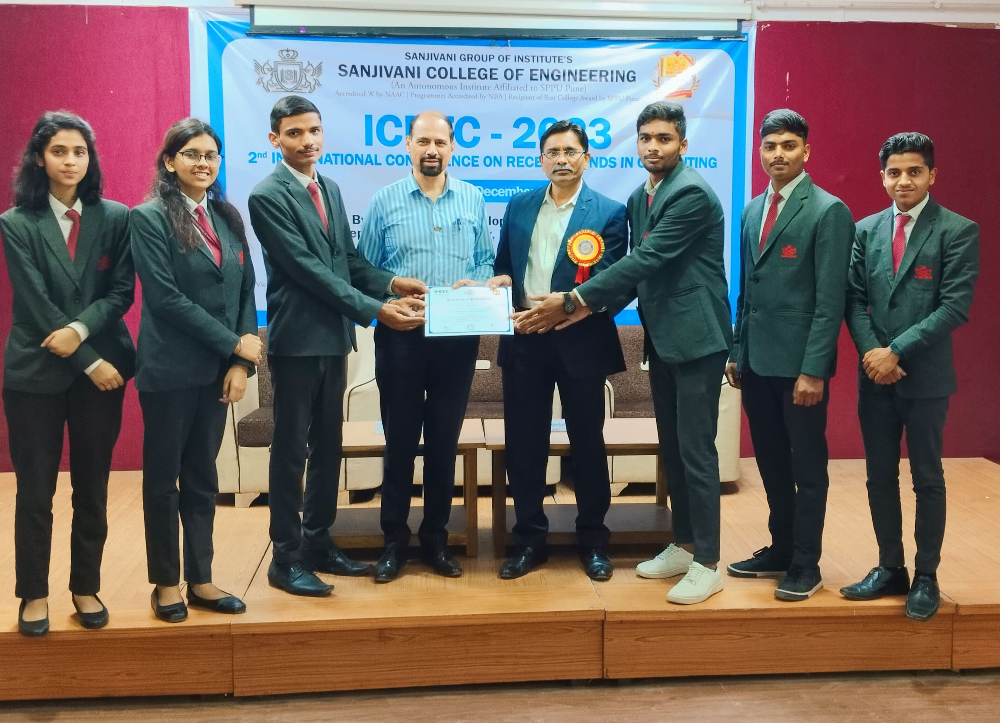

Portfolio
Portfolio
‚ÄúExcited to share that our team's research paper on "Cattle Health Monitoring System Using IoT" was presented at IEEE ICRTC 2023 International Conference! üñ•üåê‚Äù
Download Paper
Abstract
The Wireless Sensor Networks (WSNs) with a fusion of IoT are revolutionizing the world due to their advanced technologies of sensing. This initiated technology focuses on designing and executing the cattle health monitoring system (CHMS) in revolutionizing
the backbone of the agriculture sector for the improvement of the health of cattle and to increase productivity. The primary intention and objective of this advanced technology is to make a system for animal husbandry which makes it more
profitable and increases dairy production. For implementing this technology a non-invasive wearable device is used (Belt) which will help to track and monitor physiological as well as biological activities of cattle using the IoT (Internet
of Things) and for displaying the expected output an authorized personnel app or web application is used. The wearable device (Belt) is responsible for detecting the abnormalities, and motions, tracking the live location, rumination time
determination, and diagnosing the disease before reaching the advanced stage. As a result, encompassing cattle health and overall dairy production will be improved by reducing the medical treatment costs and ensuring consistency in the
field of animal husbandry. This overall research results in the cattle monitoring systems along with a variety of issues and problems and their solutions using “Cattle Health Monitoring System Using IoT.”
For More Details Click Here
For More Details Click Here
See Great Achivement!!
